Chapter 7 ggplot2
The use of analytical statistical data can prove to be one of the most relevant parts of research. Using an option such as GGplot2 can enhance data to the extent an individual without a strong scientific background can easily comprehend it. Data visualization within GGplot2 can consist of such elements as:
7.1 Violin Plots - geom_violin()
library(ggplot2)
ggplot(mpg, aes(drv, hwy)) + geom_violin()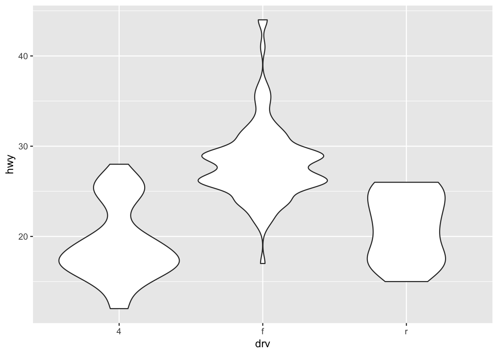
7.2 Box Plots - geom_boxplot()
ggplot(diamonds, aes(carat, depth)) +
geom_boxplot(aes(group = cut_width(carat, 0.1))) +
xlim(NA, 2.05)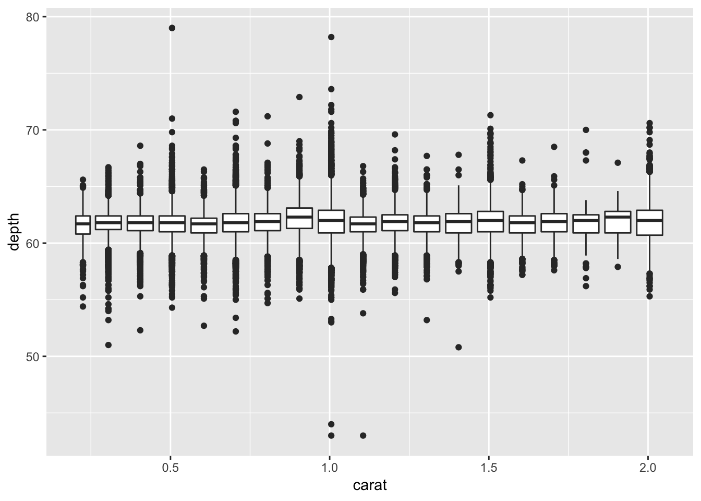
7.3 Scatter Plots - geom_point()
ggplot(mpg, aes(displ, hwy, colour = factor(cyl))) +
geom_point()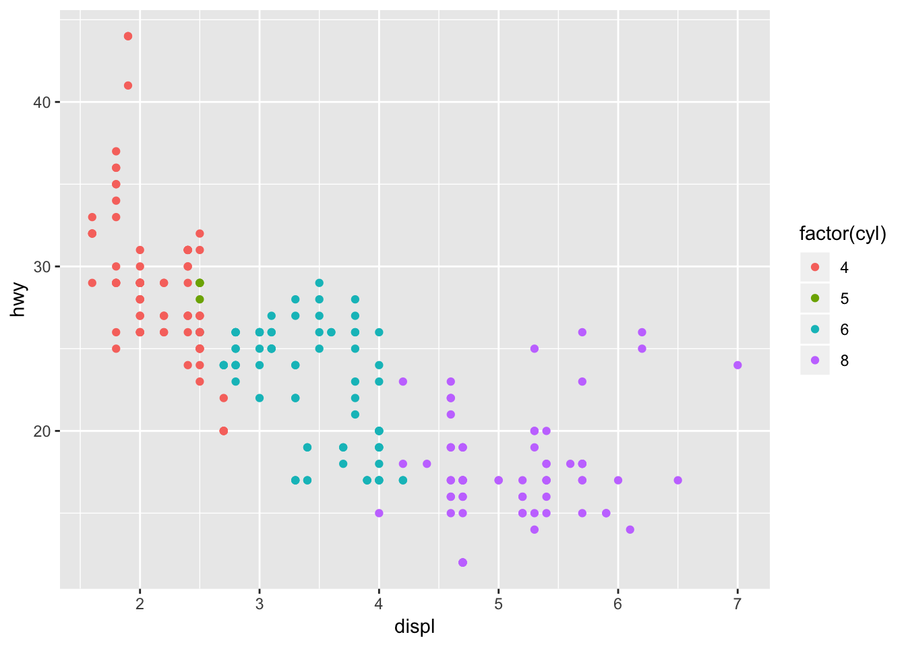
7.4 Surface Plots - geom_contour()
ggplot(faithfuld, aes(eruptions, waiting)) +
geom_contour(aes(z = density, colour = ..level..))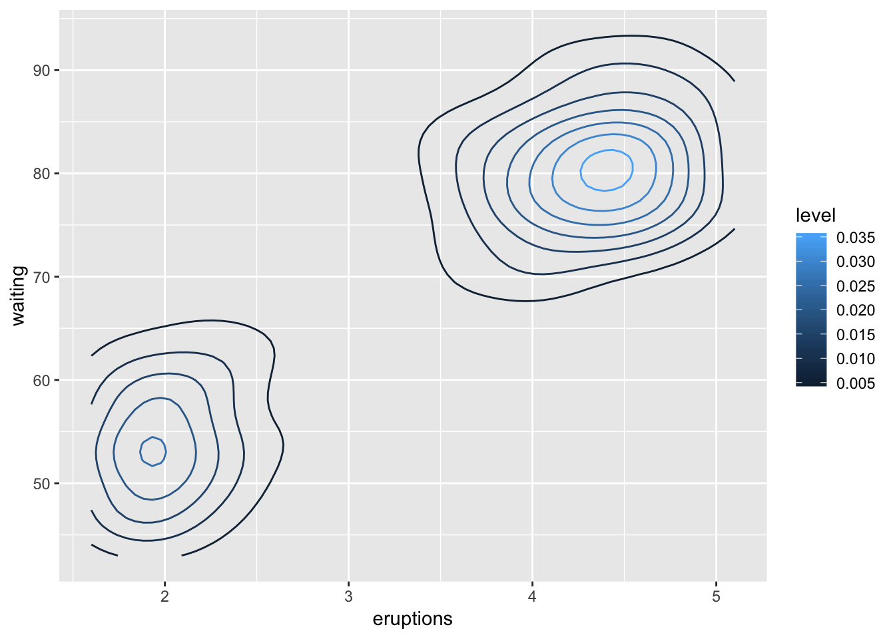
7.5 Bar Graphs - geom_bar()
dplot <- ggplot(diamonds, aes(color, fill = cut)) +
xlab(NULL) + ylab(NULL) + theme(legend.position = "none")
dplot + geom_bar(position = "dodge")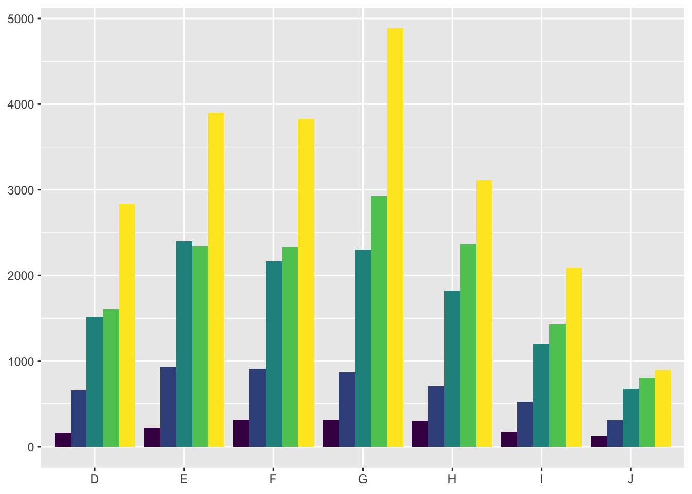
Bar Graphs can be laid out in a couple different ways, geom_bar(position = “fill”) represents the data stacked with #1 always being on top. geom_bar(position = “dodge”) places the bars side by side in a more traditional visual.
Knowing the fundamental grammar that goes into ggplot2 can expand the working knowledge and confidence of the user. Wilkinson (2005) provides multiple enhancements to better understand expressions that fit into the R environment. Grammar allows you to change many high-level properties within a graph, this means changing independent aspects to effect the overall visualization and easier interpretation by the reader (Wickham, 2016).
Layers create the objects within the plot that make it visually pleasing. Five parts compose a layer: data, aesthetic mappings, statistical transformation, geometric object, and a position adjustment.
- Mapping - aes() function will open a set of default mappings
- Data - This overrides the default plot dataset
- Geom - Geoms can make multiple arguments using aesthetics as parameters such as color.
- Stat - A statistical transformation can create a summary from a geom.
- Position - The adjustment of overlapping objects such as stacking or dodging.
Scales are the controlling entity for attributions and data mapping. An example of a scale would be the color gradient mapping a segment of the real line to a path through a color space (Wickham, 2016). The function defines whether the path is linear or curved, what color is used, and the spectrum from start to end.
The coordinate system places the objects into different planes on the plot. Coordinates affect all positions on the plot, both simultaneously and differntly depending on scales used. It is worth noting that scaling must be performed before a statistical transformation while a coordniate transformation must occur afterword (Wickham, 2016).
GGplot2 can simply be implemented into Rstudio by library(ggplot2). The rest of the data visualization that occurs is included in the package. GG can be used tolayer the information by displaying data, creating a statistical summary, and showing metadata.
Displaying data can help show a detection of a pattern, the summary can assist in model predictions from the context of the data revealing subtlties, and metadata helps give meaning to the raw data itself in either the background or foreground. Such code as: geom_area(), geombar(), geom_line(), and geom_point() are basic variaitons of plots/graphs used to repesent data.
7.6 Custom ranges
Creating custom ranges for the data represented in the plots is adjusted by settign the x and y values. Code shown below sets the limits in ranges, specific parameters can be controlled by the code shown below.
X/Y Ranges
df <- data.frame(x = 1:3, y = 1:3)
base <- ggplot(df, aes(x, y)) + geom_point()
print(base)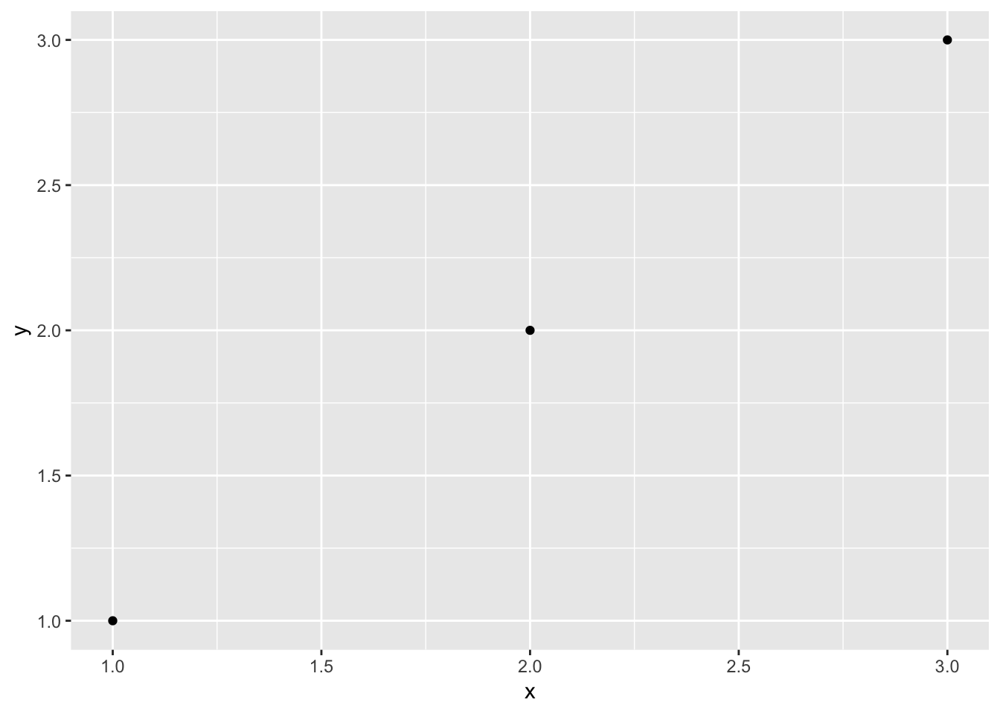
X/Y Parameters
base + scale_x_continuous(limits = c(1.5, 2.5))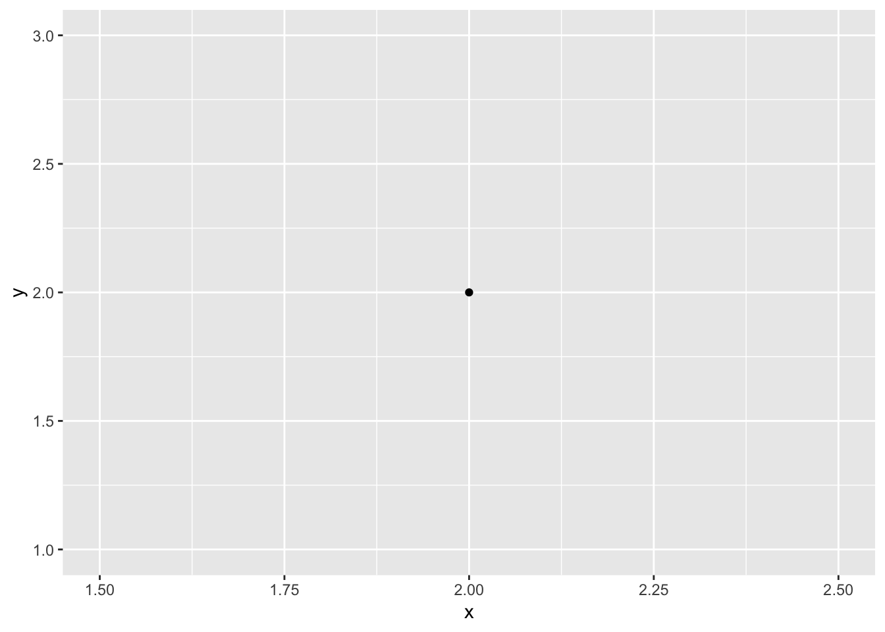
Aside from setting ranges on a plot you can also zoom into a plot to show a more specific data point relevant to the research. coord_cartesian adjusts the visualized X/Y limits of the data. For base mpg on the highway based on engine displacement can be respresented for all engine sizes or for the sake of independet research one may be interested in a smaller range of visualized data without altering the entire plot, simply by resettign the parameters of x. Each time “+” is utilized we are adding a layer or element to the plot. This can be shown with the code:
Entire Plot:
base <- ggplot(mpg, aes(displ, hwy)) +
geom_point() +
geom_smooth()Zoomed In Plot:
base + scale_x_continuous(limits = c(5, 7))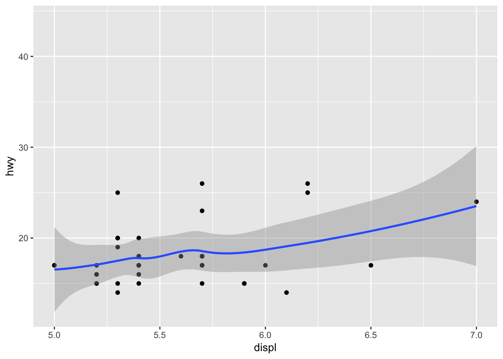
7.7 Facet wrapping
Facet wrapping gives us the ability to present mutiple different variables or factors within an experiment. Laying out multiple plots into subsets visualizing data in individual panels. To represent the previos mpg data seperated by vehicle type and engine displacement we can use code such as:
mpg2 <- subset(mpg, cyl != 5 & drv %in% c("4", "f") & class != "2seater")
base <- ggplot(mpg2, aes(displ, hwy)) +
geom_blank() +
xlab(NULL) +
ylab(NULL)
base + facet_wrap(~class, ncol = 3)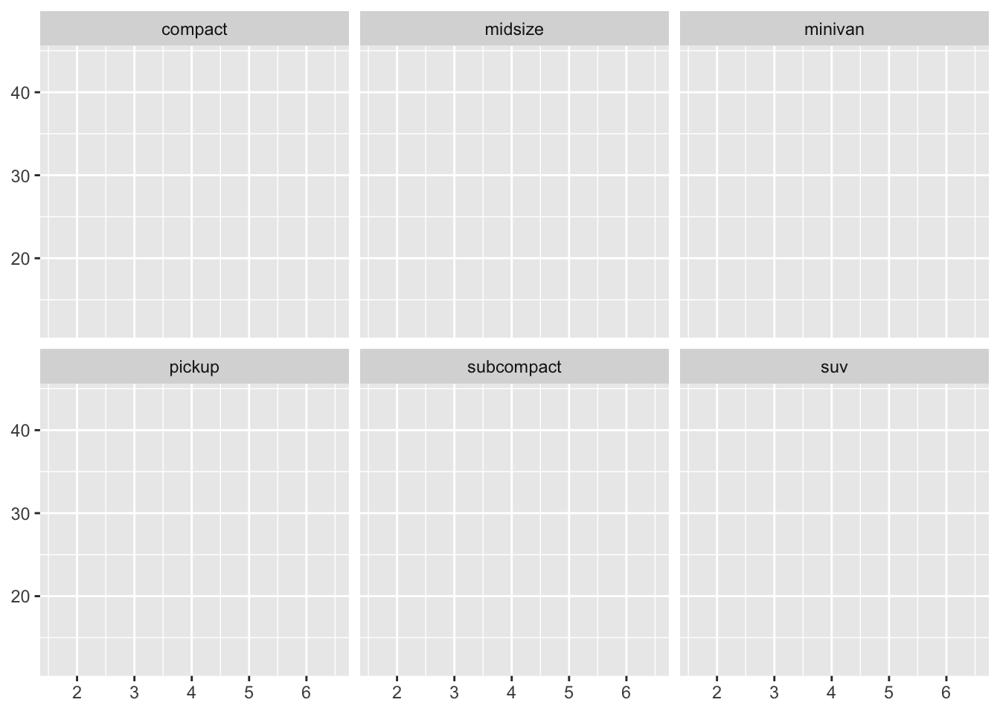
The above code creates a facet wrap, a facet grid lays out a plot in 2D. Using (. ~) spreads the values across the columns. An example of a facet grid is:
base + facet_grid(. ~ cyl)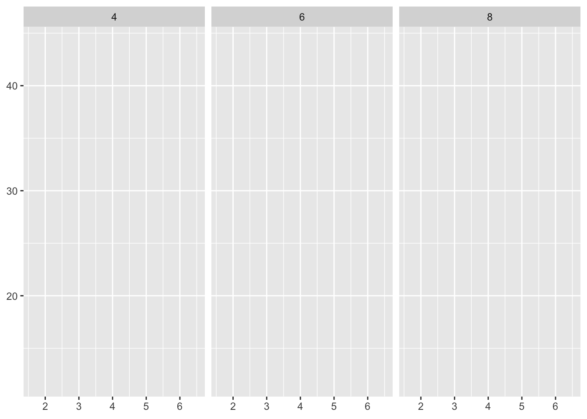
A grid can have multiple variables in the rows and columns by adding them together, a+b ~ c+d. When these variables appear on the rows and columns they become nested, meaning that only combonations that appear in the data will appear in the plot (Wickham, 2016).
Once you have established the type of plot ggplot offers multiple themed options to facilitate the aesthetics of your visualization. The themes do not affect the geoms but rather the non-data elements. Theme elements separate the data from non-data for your control. A simple element to change is the title, legend, and x-axis description. plot.title, axis.ticks, and legend.key.height govern these options respectively. GGplot is intuitive when adjusting theme colors, theme(plot.title = element_text(colour = “grey”)) will harmoniously adjust all colors appropriately. The following code will show just how intricate you can be with a scatter plot.
A simple version:
base <- ggplot(mpg, aes(cty, hwy, color = factor(cyl)))+
geom_jitter() +
geom_abline(colour = "grey50", size = 2)
base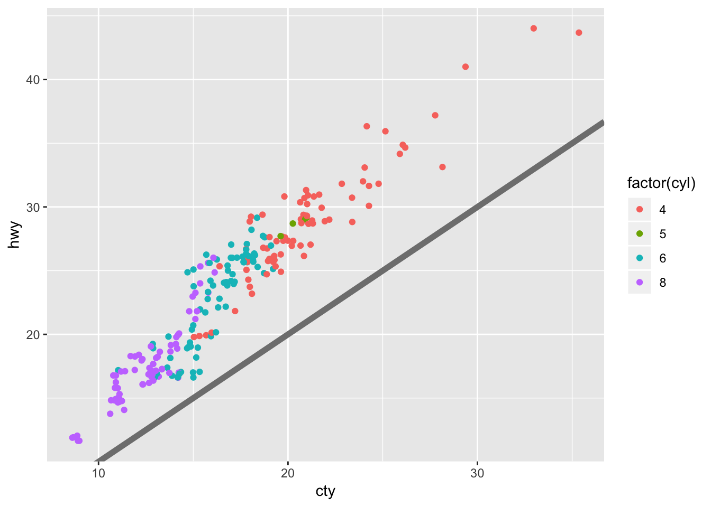
Building on the simple version:
labelled <- base +
labs(
x = "city mileage/gallon",
y = "highway mileage/gallon",
colour = "cylinders",
title = "Highway and city mileage are highly correlated"
) +
scale_color_brewer(type = "seq", palette="Spectral")
labelled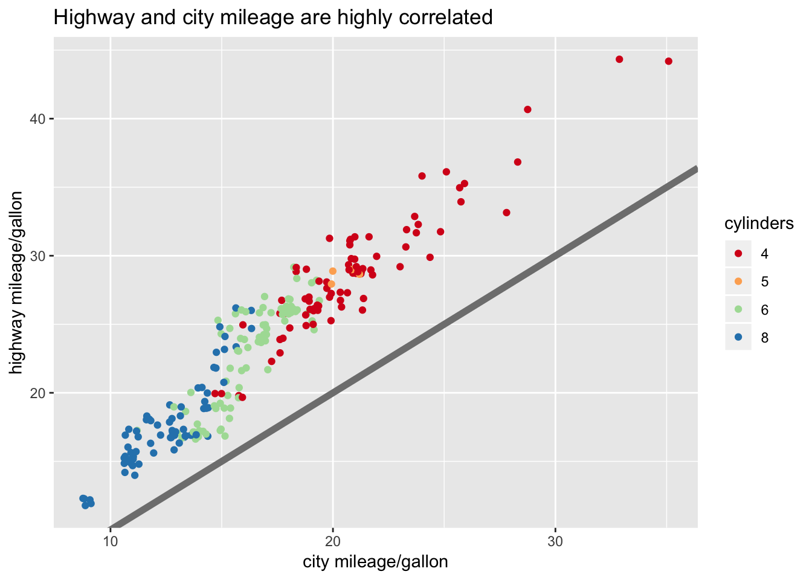
A detailed version of the same plot:
styled <- labelled +
theme_bw() +
theme(
plot.title = element_text(face = "bold", size = 12),
legend.background = element_rect(fill = "white", size = 4, colour = "white"),
legend.justification = c(0, 1),
legend.position = c(0, 1),
axis.ticks = element_line(colour = "grey70", size = 0.2),
panel.grid.major = element_line(colour = "grey70", size = 0.2),
panel.grid.minor = element_blank()
)
styled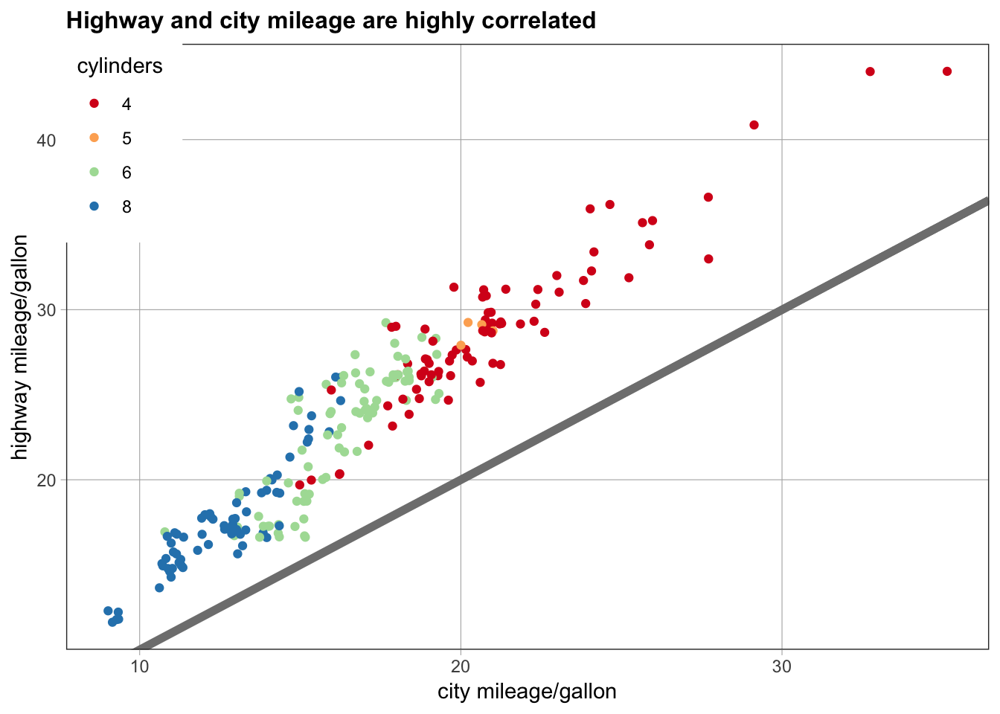
Functional Programming in Rstudio treats all GGplot objects the same as regular r objects. You can add multiple geoms to the same base plot, giving you the user, a quick reference to multiple visuals.
geoms <- list(
geom_point(),
geom_boxplot(aes(group = cut_width(displ, 1))),
list(geom_point(), geom_smooth())
)
p <- ggplot(mpg, aes(displ, hwy))
lapply(geoms, function(g) p + g)## [[1]]
##
## [[2]]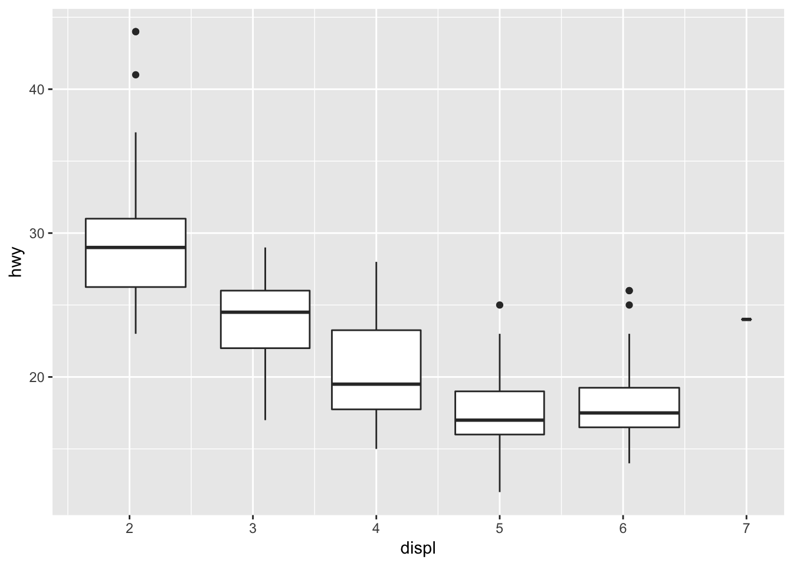
##
## [[3]]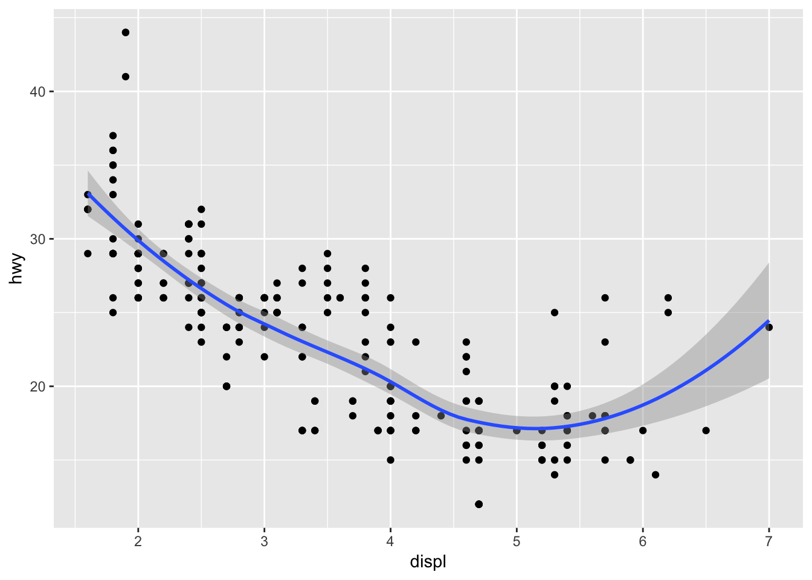
References:
Wickham, H. (2016) ggplot2. Elegant graphics for data analysis. Houston, Texas: Springer Nature.
Wilkinson, L. (2005). The grammar of graphics. Statistics and computing, 2nd edn. Springer, New York